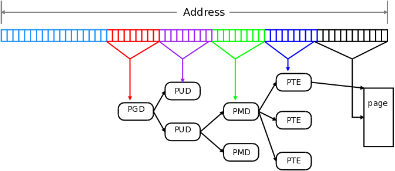

Reducing direct-map fragmentation with __GFP_UNMAPPED
Direct-map fragmentation
Over the course of a system's operation, the kernel will likely end up having to access almost every page of memory; if nothing else, it will need to load executable text and clear anonymous pages before giving them to user-space processes. The direct map is clearly useful for this work, as can be seen by the difficulties caused by systems that lack enough address space to hold a complete direct map. For much of its operation (including most memory accesses internally), the kernel simply uses direct-map addresses rather than a separate map for kernel space.
As a result, efficient access to the direct map is important; the way the direct map is managed has a significant effect on how efficient that access is. To understand the problem, a quick refresher on how page tables work may help. While page tables can seem like a simple linear array mapping page-frame numbers to physical pages, that would not be workable in practice; instead, page tables are implemented as a sparse hierarchy. Here is a simplistic diagram of how virtual addresses are interpreted first used in this 2013 article:

This diagram shows four levels of page tables: the page global directory (PGD), page upper directory (PUD), page middle directory (PMD), and the page-table entries (PTE). Current systems can add a fifth level, the P4D, between the PGD and the PUD. Virtual-address translation involves stepping through each level of the hierarchy; if the relevant data is not in the processor caches, this process can take a long time. To improve performance, processors have a translation lookaside buffer (TLB) that caches the result of a small number of recent translations. If an address is found in the TLB, the page-table walk can be avoided; improving the TLB hit rate can thus significantly increase the performance of the system.
One way to improve TLB usage is to use huge pages. A huge page has a special entry in one of the higher-level directories (the PMD or the PUD) saying that translation stops there. A PMD-level huge page will be (on most architectures) 2MB in size; a single PMD huge page can replace 512 PTE-level ("base") pages, all of which can be accessed through a single TLB entry. A (typically) 1GB PUD-level huge page expands the reach of a TLB entry even further.
The kernel's direct map is created using huge pages to reduce the TLB usage of kernel-space code, with measurable results. There is a problem, though: a huge page is managed by a single entry in the appropriate page directory, meaning that the same access permissions apply to the whole page. If the kernel needs to change the permissions for some base pages within a huge page, it must first break that huge page up into smaller pages, with a corresponding loss in access performance.
Increasingly, kernel developers are finding themselves needing to change direct-map permissions. Various sorts of address-space isolation mechanisms, for example, might remove some pages from the direct map entirely to prevent unwanted access. The increasingly stringent prohibition on pages that are both writable and executable means that, if the kernel needs to load executable code into its address space, it must split up any huge pages holding the target memory so that write permission can be removed and execute permission added; this happens when kernel modules and BPF programs are loaded, for example.
Breaking up one huge page to load a module or BPF program, or to isolate some memory, is not a huge problem. As the system runs, though, this can happen repeatedly, fragmenting the direct map over time. On systems where, for example, BPF programs are frequently loaded, the result can be a badly fragmented direct map and equally bad performance. This problem has led to a number of efforts, such as the BPF program allocator, intended to minimize the effect on the direct map.
Improving the page allocator
Rapoport's patch addresses this problem by adding yet another allocation flag called __GFP_UNMAPPED. When kernel code allocates one or more pages using this flag, they will be removed from the direct map before being returned to the caller. The value that is added is not just in the direct-map removal, though, but also in the cache that the page allocator maintains for __GFP_UNMAPPED allocations.
When the first such allocation request is made, the allocator will remove a PMD-sized huge page from the direct map, use a portion of it to satisfy the request, and hang onto the rest to satisfy future requests. Unmapped pages that are freed will be retained in that cache as well. The effect will be to focus these special requests on a single region of memory, avoiding the fragmentation of the direct map as a whole. There is also the inevitable shrinker that can be called when memory is tight; that will cause the release of pages in the __GFP_UNMAPPED cache back to the kernel for use elsewhere.
The patch set includes two uses of the new facility. One of those is in the x86 implementation of module_alloc(), which allocates space for loadable kernel modules. The other is in the implementation of memfd_secret(), which removes the allocated space from the direct map entirely, making it inaccessible to the kernel.
There are no benchmark results included with the patch set, so it is not
really possible at this point to quantify just how much it can improve the
performance of the system. The performance effects will be heavily
workload-dependent in any case. But the problem being solved is well
understood, and the effects of direct-map fragmentation have been measured
in the past. So it seems clear that some sort of solution will need to be
merged at some point. Whether this latest attempt is that solution remains
to be seen; that may be a question for the upcoming LSFMM/BPF conference
to address.
| Index entries for this article | |
|---|---|
| Kernel | Memory management/GFP flags |